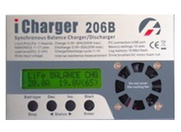
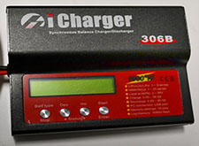
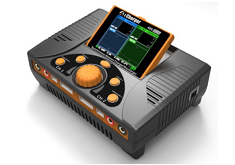
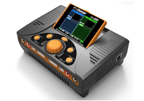
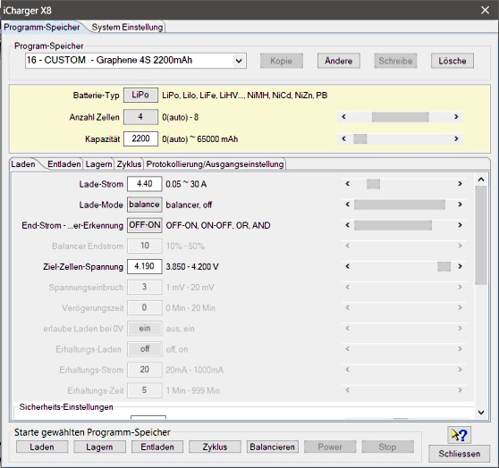
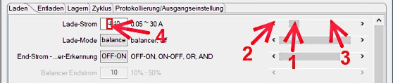

iCharger 106B, iCharger 206B, iCharger 208B, iCharger 306B, iCharger 3010B - Akkuladegeräte


Für die iCharger Geräte von Junsi mit sereiellem Anschluss gibt es keinen Gerätedialog.
Die serielle Verbindung muss lediglich hergestellt werden und es erfolgt sofort die Live-Aufnahme oder das Auslesen aus dem Gerät.
Hinweis: Durch die verwendete Baudrate 128000 können keine Daten unter UNIX abgeleiteten Betriebssystemen wie Linux oder MAC OS X eingelesen werden.
Diese Datenrate hat keinen geraden Teiler und man kann sie nicht einstellen. Unter Linux hätte man die Möglichkeit das Kernelmodul für den seriellen Adapter anzupassen. Im Internet findet man dazu entsprechende Hinweise.
iCharger X6, S6, X8, X12, 406DUO, 308DUO, 4010DUO - Akkuladegeräte
 

Eine Live-Datenaufnahme kann über den USB Anschluss erfolgen.
Es ist darauf zu achten, dass der PC dieses USB HID Gerät erkennt und einrichtet.
Bei UNIX abgeleiteten Betriebssystemen kann es erforderlich sein Regeln für "udev" oder Kernel-Extensions einzurichten.
Hinweise erhält man bei der Auswahl des Gerätes im Geräteauswahldialog.
Für den iCharger mit USB HID Anschluss besteht die Möglichkeit im Gerät, Mikro SD-Karte, gespeicherte Aufnahmen auszulesen. Das geschied über das Menü oder "Strg+I".
Ein Dateiselektionsdialog wird geöffnet und ermöglicht die Auswahl der Dateien.
Dazu muss das Gerät muss als USB Massenspeicher angeschlossensein.
Mit der neusten verfügbaren Geräte-Firmware (X&S >= 2.0.8, DUO >= 2.19) gibt es die Möglichkeit Programm-Speicher über den Geräte-Dialog hinzuzufügen oder zu verändern.
Hierzu dient ein folgender Geräte-Dialog.

Wie erstelle ich ein neuen Programm-Speicher?
- Eintrag mit 'BUILD-IN' vom gewünschten Batterie-Typ wählen, über Taste "Kopie" wird ein neuer Eintrag "_Kopie" entstehen.
- Den gerade erstellten Eintrag "_Kopie" wählen und die Taste "ändere" drücken. Damit wird der Der Eintrag "_Kopie" änderbar
- Namensänderung durchführen und als Abschluss Enter-Taste auf der Tastatur drücken. Hierdurch wird der Eintrag rot mit dem Hinweis "VERäNDERT" dargestellt.
- Taste "Schreibe" benutzen, um den geänderten Programm-Speicher zum Gerät zu übertragen.
- Alle Parameter den Wünschen entsprechend ändern und durch "Schreibe" zum Gerät übertragen.
Grundsätzlich ist bei den Tasten darauf zu achten, ob sie aktiv geschaltet sind oder nicht. Hält man die Maus darüber wird Hilfetext zur Funktion ausgegeben.
- "Kopie" - kopiert einen 'BUILD_IN' Programmspeicher zu einem 'CUSTOM' Programmspeicher mit Namen _Kopie
- "Ändere" - ermöglicht den Namen von einen ausgewählten 'CUSTOM' Programmspeicher zu ändern
(Ende der Eingabe mit Enter/Datenfreigabe auf der Tastatur abschliessen, über die Drop-Down-Auswahl kann nur ein Eintrag gewählt werden)
- "Schreibe" - wird aktiv, wenn änderungen vom Namen oder Parameter erkannt werden und schreibt den Programmspeicher ins Gerät
- "Lösche" - ermöglicht das Löschen eines 'CUSTOM' Programmspeichers
Zum verändern der Programm-Parameter gibt es verschiedene Möglichkeiten:

- Den Schieber direkt mit der Maus selektieren und verschieben, bis der gewünschte Wert entsteht
- hier selektieren verändert den Wert in kleinster Schrittweite
- hier selektieren verändert den Wert in Schrittweite x 10
- Zahlenwerte können auch einzeln markiert und überschrieben werden (markiert man mehrere Zahlen auf einmal und versucht diese zu ändern geht das meist schief, weil jede änderung sofort am Schieber reflektiert wird)
Programm-Ausführungen können direkt über den Dialog gestartet werden.
Hierbei wird dann nach Prüfung des Status die Datenaufnahme gestartet.
Der Dialog muss manuell geschlossen werden oder der Prozess kann noch gestoppt werden.